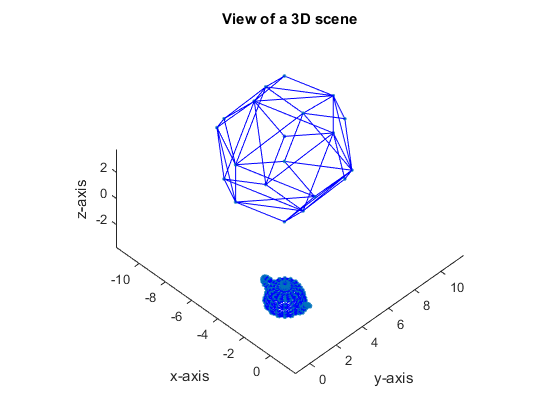
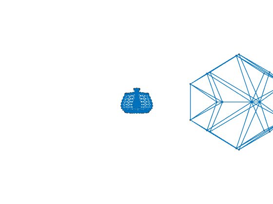
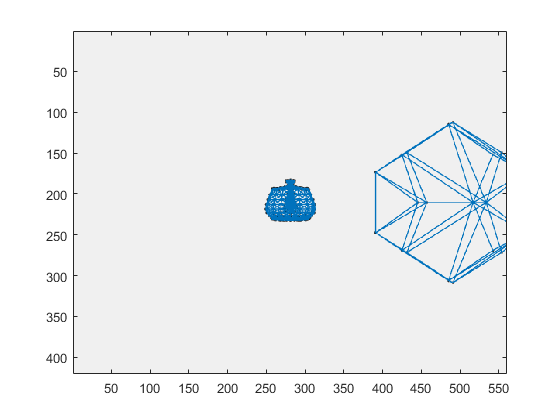

Contents
Parameters initaialization
close all
addpath('Objetos')
addpath('Funciones')
scenename_list1 = {'Poly', 'peaks', 'house', 'sphere', 'pyramid'};
scenename_list2 = {'cube', 'diamond', 'dodecahedron', 'humanoid_tri', 'teapot'};
SceneProperties = struct('w',[],'h',[],'l',[],'N',[],'T',[],'A',[],'ScaleFactor',[]);
look_at = [0,0,0];
sky = [0,-1,0];
foclen = 1;
position = [0, 0, 0];
FOV = 70;
Panoramica = [15,0,10];
Dolly = {[logspace(1.3,2,20)],20};
Create Scene
SceneType = 2;
if SceneType == 1
scenename = {scenename_list1{1}};
SceneProperties.w = 4;
SceneProperties.h = 4;
SceneProperties.l = 4;
SceneProperties.N = 20;
SceneProperties.T = [0 0 0];
SceneProperties.A = [0 0 0];
SceneProperties.ScaleFactor = 1;
end
if SceneType == 2
scenename = {};
scenename(1) = {[scenename_list2{5} '.obj']};
SceneProperties(1).T = [0 0 0];
SceneProperties(1).A = [0 0 pi/2];
SceneProperties(1).ScaleFactor = 1/50;
scenename(2) = {[scenename_list2{3} '.obj']};
SceneProperties(2).T = [-8 8 0];
SceneProperties(2).A = [0 0 0];
SceneProperties(2).ScaleFactor = 4;
end
[X, L] = Gen_Scene (scenename,SceneProperties,SceneType);
fig = display3Dscene([],X,L);
axis([min(X(1,:)),max(X(1,:)),min(X(2,:)),max(X(2,:)),min(X(3,:)),max(X(3,:))])
view([45 45])
Reading Object file : teapot.obj
% OBJ file created by ply_to_obj.c
%
Finished Reading Object file
Reading Object file : dodecahedron.obj
% OBJ file created by ply_to_obj.c
%
Finished Reading Object file

Create cameras
camera = cameras(look_at, sky, foclen, position, FOV, 'dolly', Dolly);
disp('Generating cameras')
Generating cameras
Make projections
[F, P, IM] = MakeImage(X,L,camera);

Show results
showcams(fig,foclen,P,IM);
axis('tight')
print('-dpng','-r96','-cmyk','3D_scene_with_cams_ejemplo2.png')
showVideo (F, 2, 5);


Save data
disp('Saving data')
v=VideoWriter('ejemplo2.avi');
v.FrameRate=10;
open(v);
writeVideo(v,F);
close(v)
savegif(F,'ejemplo2');
Saving data